苹果背后的华人科学家，要做一家物理AI独角兽
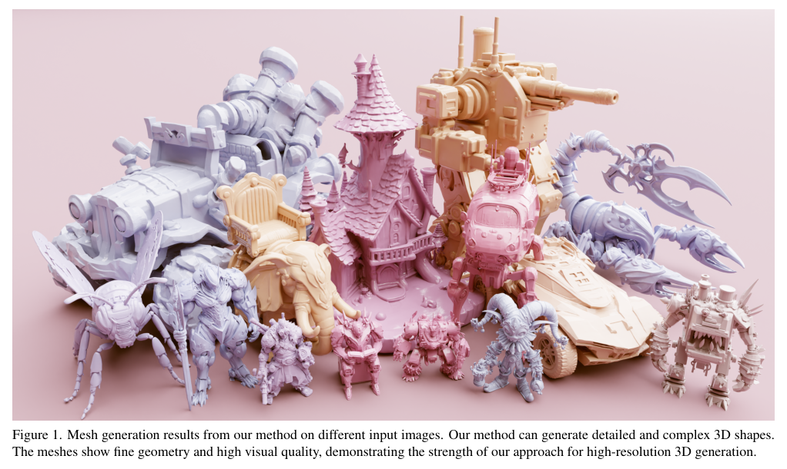
1/2
多视图重建工业起点（2015–2020）：董事长权龙（HKUST VisGraph 创始人、1995 年非标定三视图“六点算法”提出者）于 2015 年携博士生方天、姚遥创办三维重建云平台 Altizure，并于 ECCV 2018 发表深度学习多视图立体视觉奠基作 MVSNet (arXiv:1804.02505)。Altizure 于 2020 年被苹果收购后，权龙出任苹果空…

多视图重建工业起点（2015–2020）：董事长权龙（HKUST VisGraph 创始人、1995 年非标定三视图“六点算法”提出者）于 2015 年携博士生方天、姚遥创办三维重建云平台 Altizure，并于 ECCV 2018 发表深度学习多视图立体视觉奠基作 MVSNet (arXiv:1804.02505)。Altizure 于 2020 年被苹果收购后，权龙出任苹果空…
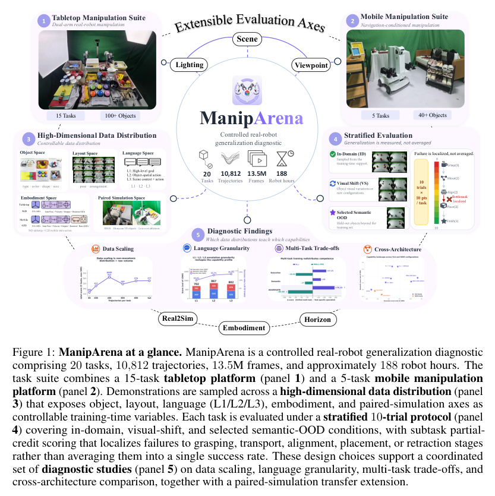
属于中高度标题党——WALL-OSS-1.0 在原生 VLA 预训练能力保留（Stage 1 保持 79.2% vs Qwen3.5 基座 79.4%）、XInfer 低延迟并发推理（2B Nano 版 RTX 5090 单请求 P50 20.1 ms / 产线 2,231 parcels/h）与物流分拣降本（10 h 微调对比无预训练 >1,000 h）上确有扎实工程推进；但标…
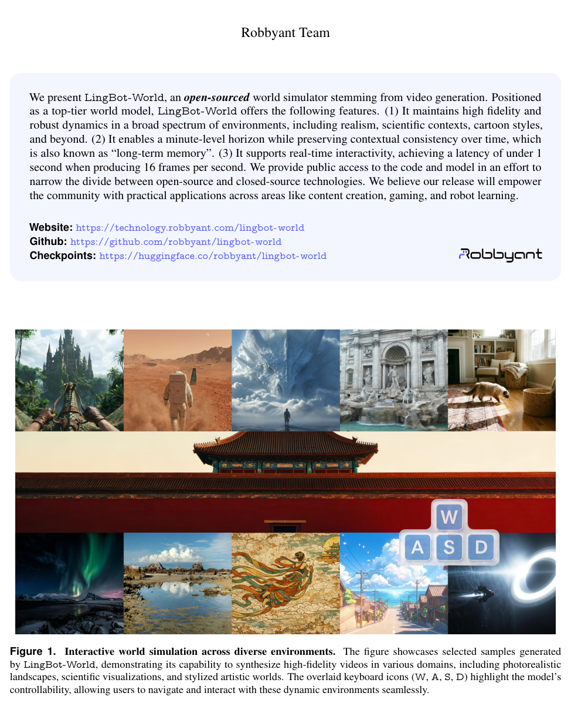
已定位站内 World Labs（Marble/Atlas、AMD 收购档案）及 PICO/GR00T 2 等既有研究，并穿透检索 World Labs 官网 Atlas/Frameboy 技术博客、AMD 投资者关系完成收购公告、ByteDance Seed 公开模型线（GR-3、Seed3D、Seedance…
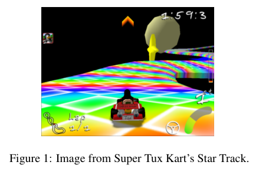
把课堂讲授、原始论文与站内控制频谱研究对照后可见，机器人策略演进的主线不是「用更大的语言模型硬输出关节角」，而是按频率分层解耦：底层靠高频硬件闭环保安全、中层靠 Action Chunking 与连续动作头消除自回归误差与精度塌缩、高层仅让 VLM / VLA 在 0.1–4 Hz 承担空间与任务规划。直接拿离散 Token VLA 或通用 API 模型直控高频机械臂，本质上是拿…
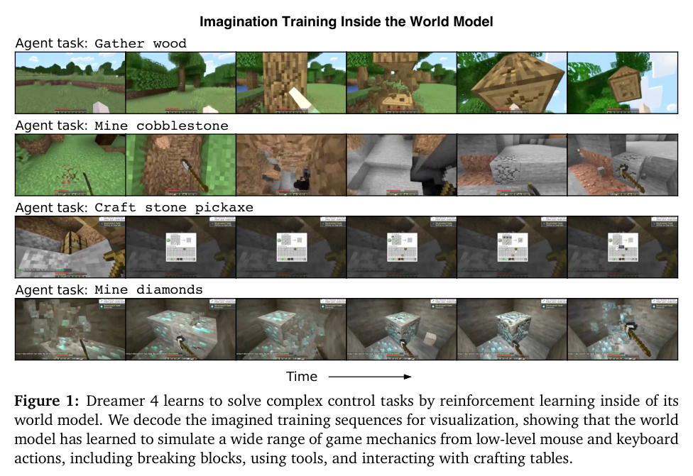
融资与主体身份核验：Embo 总部位于旧金山，2026-11-23 正式走出隐身期并宣布完成 $110M（约合人民币 8.6 亿元，中文标题简写 8 亿元）种子轮融资，由 a16z 领投，Khosla Ventures、DST Global 与 NVIDIA（据中文报道通过旗下 NVentures 参投）跟投。Embo 在官网及 X 账号（@EmboAI）宣称致力于为人型/通用机…
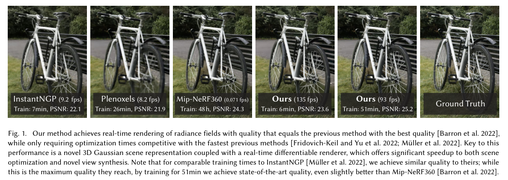
完成 @David_yc607 原创 X 长文《Tesla FSD V15 ,不仅仅是画质升级：从 3DGS 到生成式世界模型，Tesla 究竟在做什么？》的深度核查与一级信源建档：（1）如实将该长文定性为 @David_yc607 原创技术评述并保持 display_source / display_url /…
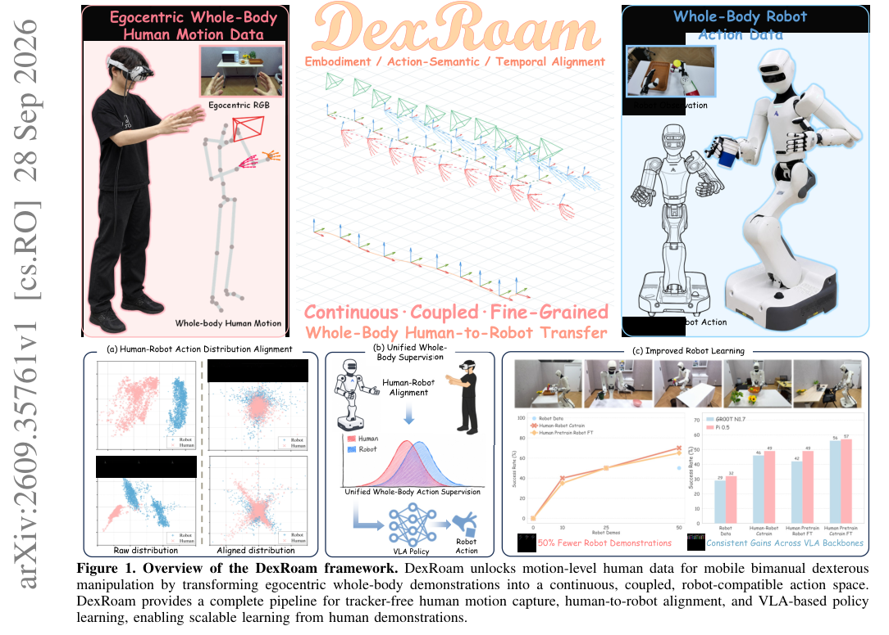
对「这个也有趣」的第一性原理回应——DexRoam 的真正工程价值不在于提出新 VLA 架构，而在于用低成本无追踪器消费级穿戴方案（Meta Quest 3 + ZED Mini 30 Hz 机内双目实时回传），把以往「静态桌面 UMI」难以覆盖的移动底盘 + 躯干 + 双臂 + 头部 + 五指灵巧手（56 维全身连续动作空间）耦合示范打通了「本体对齐—DeltaEF 语义对齐—…
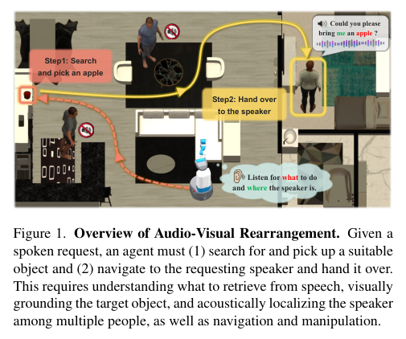
基于 arXiv:2611.30171v1 HTML 全文核验 Audio-Visual Rearrangement (AVR)：在 Habitat 3.0 + HSSD + SoundSpaces 2.0 仿真环境中结合 Qwen3-TTS 生成 2,000 条训练验证轨迹与 400 条评测轨迹（200 seen / 200 unseen，三类八子类 4:3:3 分布）。框架基…
按用户指示忽略二手微信评论叙事，穿透核验柏川数据（ByteTree.AI）官网、36氪创投工商与融资记录、科创板日报、Pre-A 官方通稿、宿迁官媒《速新闻》实训场实地账本及战略投资方星海图 EDP 官网；对官网历史营收（2023年 \>5000万）与宿迁一期隐含单价（~¥110/h）作交叉核查，并保留 2024–2026 实际营收、硬件产权及复购留存缺口。 · 柏川数据…
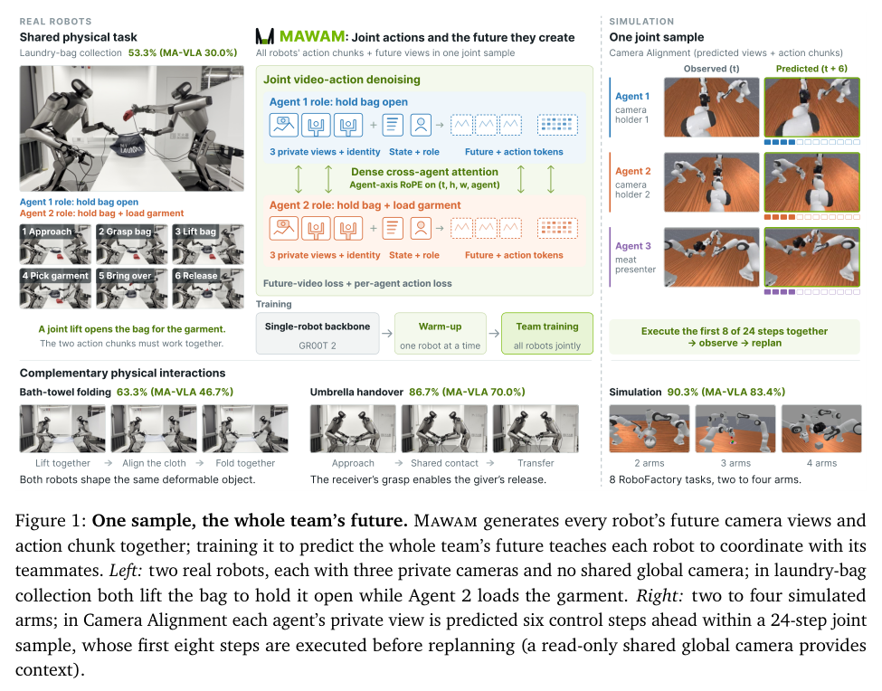
MAWAM（Multi-Agent World-Action Model for Coordinated Manipulation）证明了把多个独立机械臂各自的私有相机观测、本体状态与动作块（Action Chunk）放进同一个冻结视觉—推理骨干（GR00T 2 / Cosmos-Reason1 + Wan 2.1 视频 VAE）联合去噪，能在无共享全局相机、纯依赖机载私有视角下…

物理对齐与统一运动底座（2025 前序）： HOVER（ICRA 2025，arXiv:2410.21229）：通过多模式 DAgger 蒸馏将根速度跟踪、关节角跟踪与末端运动学控制统一进单一策略，在 Unitree H1 与 Unitree G1 机载端以 100 Hz 频率运行，往返延迟 15–25 ms（仿真物理子步 1000 Hz）。 · 罗正宜 (Zhengyi…
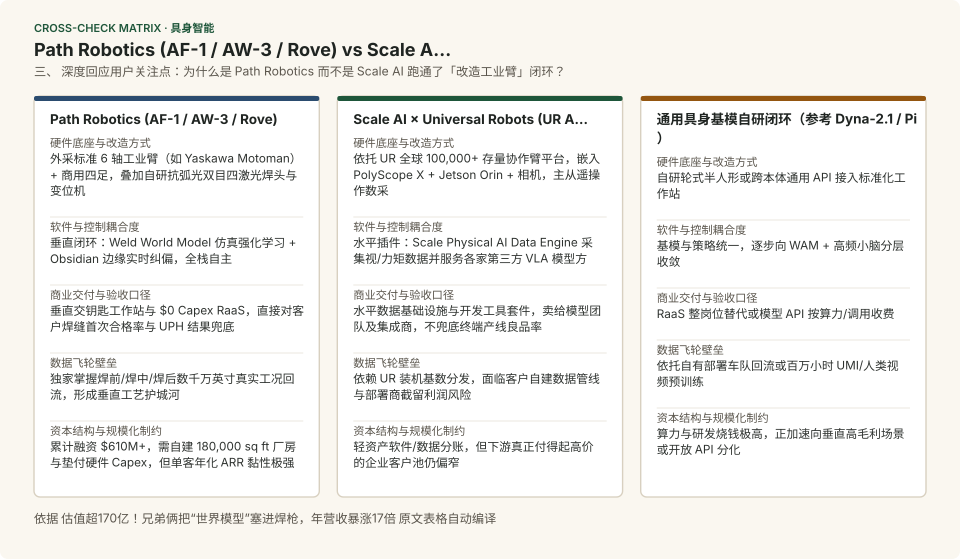
本轮对 Path Robotics 2026-11-10 官方 Series E 通稿、领投方 Georgian 尽调备忘录、Path 官方技术文档（llms-full.txt 与 AW3/AF-1/Rove 规格）及 HII 官方军工造船协议的交叉穿透，整体印证了用户直觉的前半句（Physical AI 工业商业化第一环是复用成熟工业运动学底座而非另造人形），但必须精细纠偏后半…
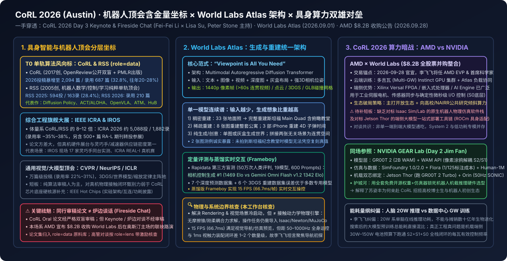
微信原文为公众号「具身纪元」作者 Marilyn Liu 在奥斯汀 CoRL 2026 Day 3 现场的一手旁听速记；本工作台已穿透核实上游 CoRL 2026 官方议程（Yuke Zhu 介绍、李飞飞 Keynote、苏姿丰炉边对谈、Peter Stone 主持）、World Labs 官方 Atlas 技术报告 及 AMD 约 82 亿美元全股票收购 World Labs…
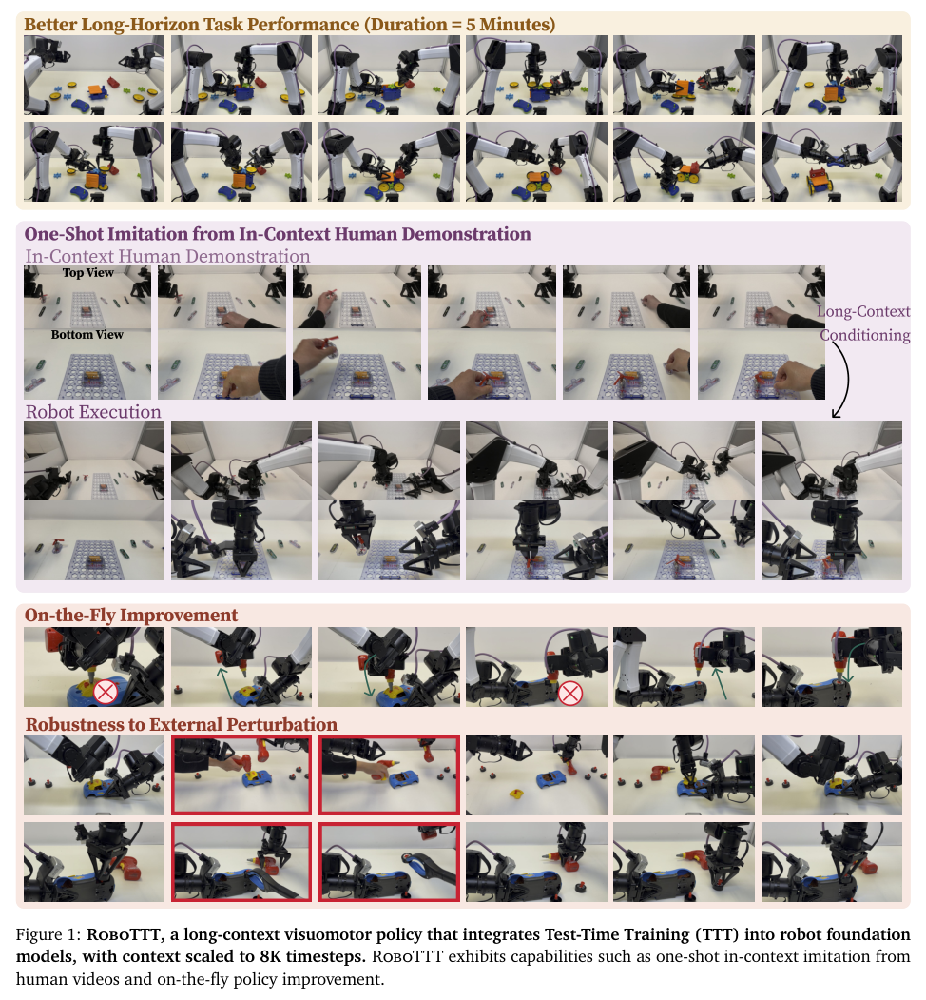
NVIDIA GEAR Lab（Yunfan Jiang、Yevgen Chebotar、Ruijie Zheng、Scott Reed、Li Fei-Fei、Yuke Zhu、Linxi "Jim" Fan 等）入选 CoRL 2026（Austin）Best Paper Finalist 的 RoboTTT（arXiv:2607.15275），解决了现有 VLA 具身大模型“…
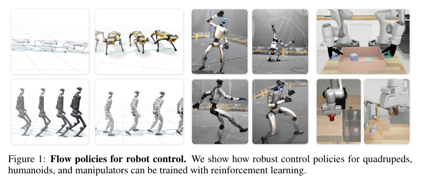
FPO++（Flow Policy Gradients for Robot Control (FPO++): Likelihood-Free Online RL for Expressive Humanoid & Manipulation Policies，arXiv:2602.02481，CoRL 2026 Oral，代码仓 github.com/BrentYi/fpo）打通了…
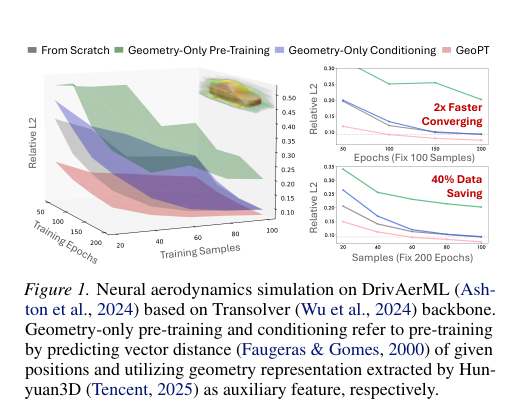
触发线索为微信公众号「深观启元」二手融资评述（退居 trigger_source）。已穿透核验公司唯一公开官方主站 tensorworld.com（中/英文及 ICP 备案 京ICP备2026051217号）、核心团队代表作一手论文 GeoPT (arXiv:2602.20399)、Transolver-3 (arXiv:2602.04940)、Uni3D…
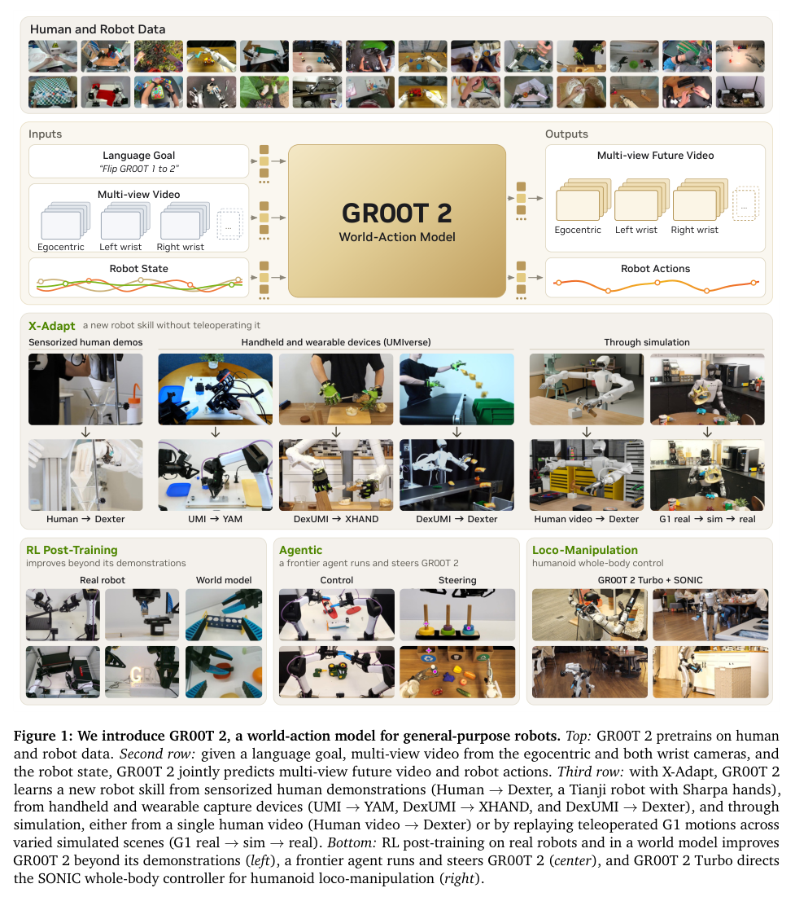
Astra 冲击下的 System 1 / System 2 重新分工：Jim Fan 在 Keynote 中以 2026-09-03 Astra 发布引发的“悲伤 5 个阶段”开场，指出前沿推理模型（System 2）虽能理解长程语义、编写控制代码并做视觉监工，但无法替代高频本地执行的物理技能层（System 1）。GR00T 2（20 亿参数 / 2B…
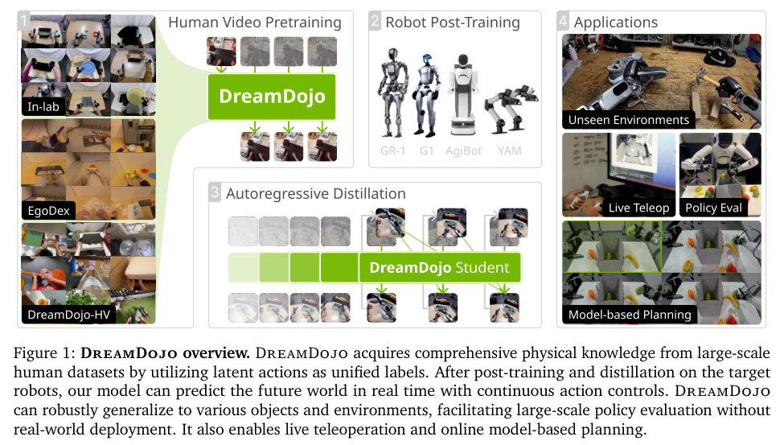
System 1 实时执行下沉至机载 2B World-Action Model：NVIDIA GR00T 2 将模型主体收敛至基于 Cosmos-Predict2.5-2B 的 20 亿参数世界—动作模型，配合 Wan 2.2 VAE 四倍空间压缩（GR00T 2 Turbo），在单颗机载 Jetson Thor 上取得 124 ms 中位推理延迟（输出 80 步动作块，驱动…
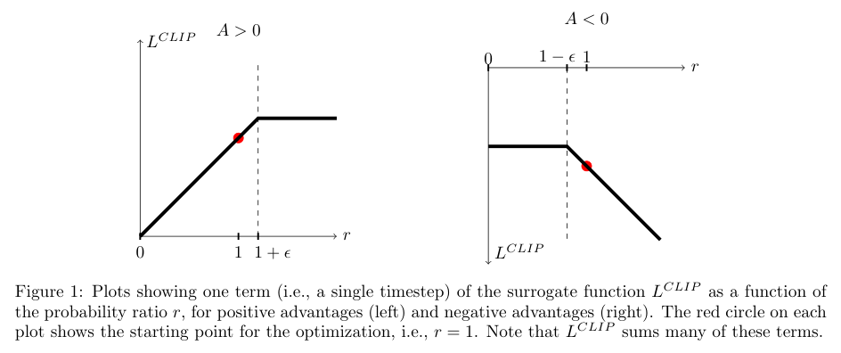
第 1 步：定界与五元组建图（reset 与智能体—环境边界） · Richard S. Sutton & Andrew G. Barto · 有来源缺口 本地原件归档 · 固定材料版本 · 一手原站 · 触发线索（Robotics_Notebooks (ImChong)） 触发材料为 ImChong 维护的开源教学笔记…
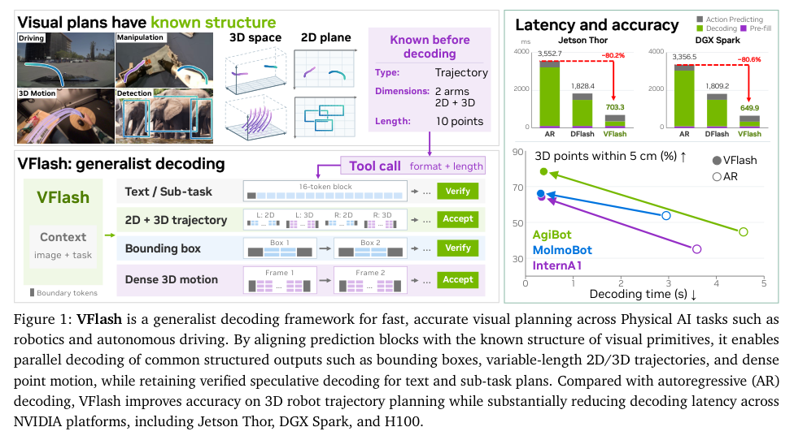
NVIDIA LPR Lab VFlash：5 层双向 537M 扩散草稿器单步并行草拟完整 2D/3D 轨迹，Thor 解码提速 12–42 倍、3D 误差降 42.6%。 · NVIDIA LPR Lab · VFlash (Jim Fan) · 有来源缺口 本地原件归档 · 固定材料版本 · 一手原站 · 触发线索（SourceMind） VLM（视觉语言大模型，如…
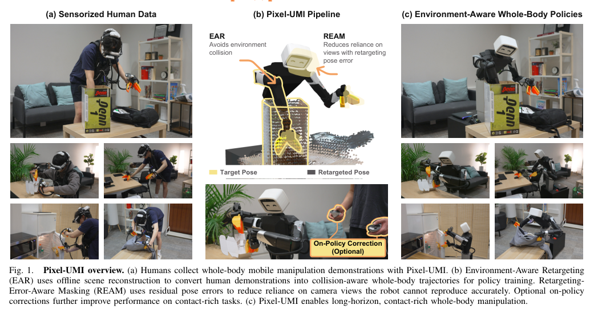
环境感知重定向（EAR）与延迟校准动作分配（本工作台核查）：传统桌面 UMI 只需映射末端夹爪 6-DoF 轨迹，但在全身移动操作中，相同末端手位姿对应冗余的躯干、双臂与底盘位姿。Pixel-UMI 的 EAR…
旧金山具身核心圈一线访谈（Alex Zheng）：Pi 转型算力底座，数据源转向自动化 3D 场景 + FLORA 稠密奖励，灵巧手受制于 30 万次寿命约束。 · Alex Zheng (@AIex_3) · 有来源缺口 本地原件归档 · 固定材料版本 · 一手原站 · 触发线索（X (@AIex_3)） 经交叉比对 X（Twitter）、GitHub 与学术发表记录，该账号真…
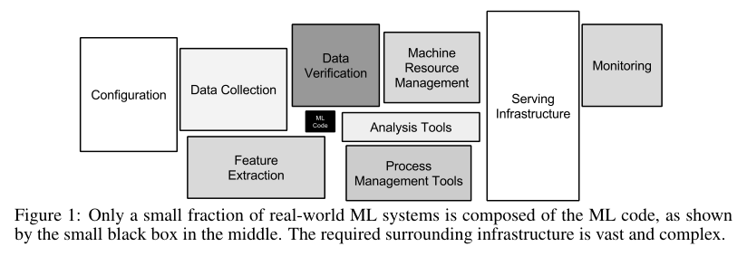
前 NVIDIA GR00T 早期成员、Dream Labs 研发负责人 Kaushil Kundalia 将 Google 经典的 ML 隐性技术债命题（成熟系统中机器学习代码仅占至多 5%，胶水代码与周边基建占至少 95%）推进至物理具身场景：在物理交互回路中，数据加载器、通道顺序、动作执行分块与同步/异步控制不再只是工程配套，而是直接改写消融实验数字的隐蔽自变量；对照…
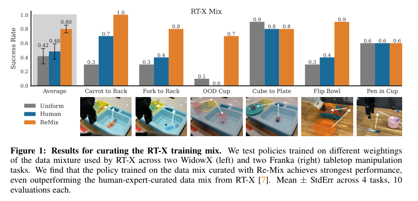
对标 Stanford Re-Mix 与 Octo 实证：调整数据域采样权重可拉升真机成功率 +23%–40%，但拆穿离线 VQA 评测向真机控制闭环迁移的三大断裂。 · 招商局狮子山实验室 · HuggingFace Lion-ER · 有来源缺口 本地原件归档 · 固定材料版本 · 一手原站 · 触发线索（量子位） 前半句（「在既有机器人数据集内，仅调整不同数据域的训练权重…
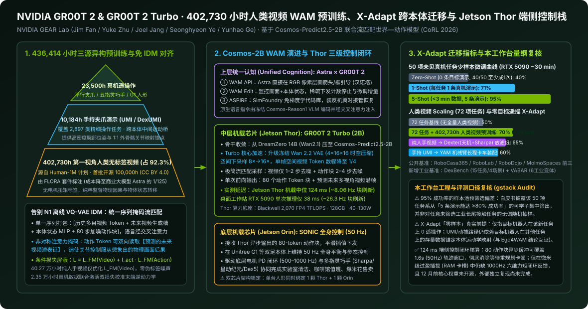
GR00T 2 将英伟达具身基础模型从前代 N1/N1.5 的“静态 VLM 特征拼接动作头”推进至基于 Cosmos-Predict2.5-2B 的统一序列世界—动作模型（WAM），在 402,730 小时第一视角无标签人类视频（占总时长 92.3%）、23,500 小时真机遥操作与 10,184 小时手持 UMI 数据上通过「动作 Token 定向读取预测未来视频帧 + 纯视…
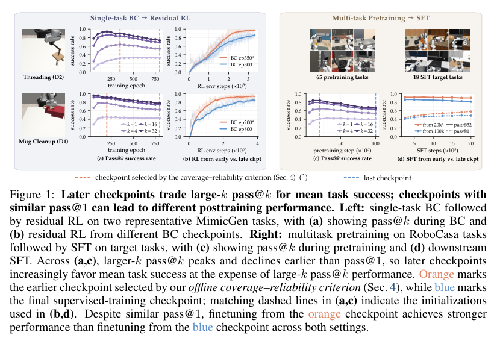
斯坦福大学 REALab（Zhanyi Sun、Shuran Song；致谢 Huy Ha 与负责真机采样的 Jack Joler）联合 CMU Max Simchowitz 发布的 arXiv:2611.01565 实证指出，生成式机器人策略（Diffusion Policies 与 VLA）在监督预训练（Supervised Pretraining）后期会出现…
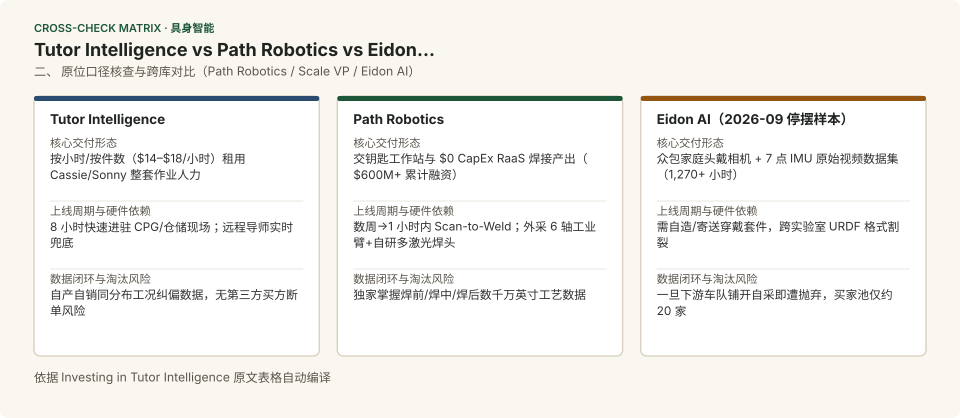
股本结构与创始人背景（本工作台核查）：Tutor Intelligence 于 2021 年由 MIT CSAIL 毕业生 Josh Gruenstein（CEO）与 Alon Kosowsky-Sachs 创立，总部设于马萨诸塞州 Watertown。2026 年 11 月宣布完成 7,500 万美元（$75M）B 轮融资（前文巡检摘要将「7,500 万」截断为 500 万，此…
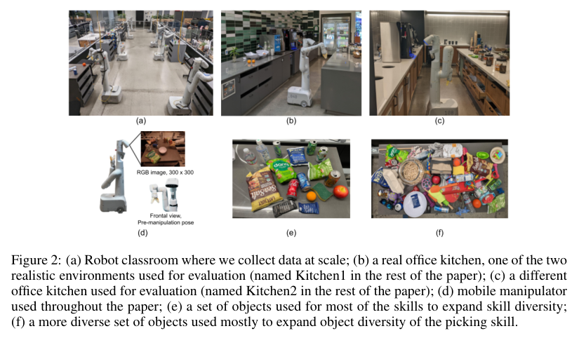
穿透核查 human five 梳理的从 SayCan、RT-1 到 MolmoAct2 八篇核心论文（arXiv:2212.06817 至 2605.02881）及作者自测的 843 步 LIBERO 动作离散化消融实验可见，VLA 三年演进的主轴是从「256-Bin 离散词表逐帧自回归（RT-1 / RT-2 / OpenVLA）」转向「连续 Action Chunk 流匹配…
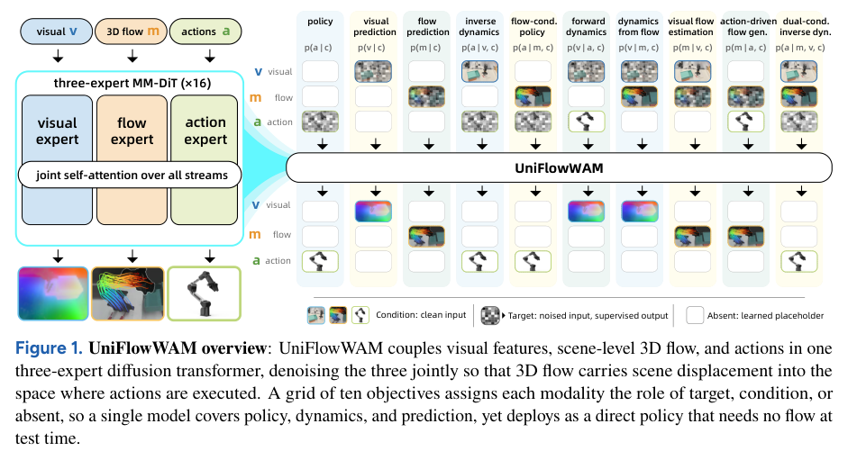
上海交通大学 MVIG 实验室、上海创智学院与 穹彻智能 Noematrix（共同一作 Jialin Tian、Zhuofan Li，卢策吾教授与杨理欣教授团队）在 arXiv:2610.30991 推出 UniFlowWAM。不同于以往把光流/3D…
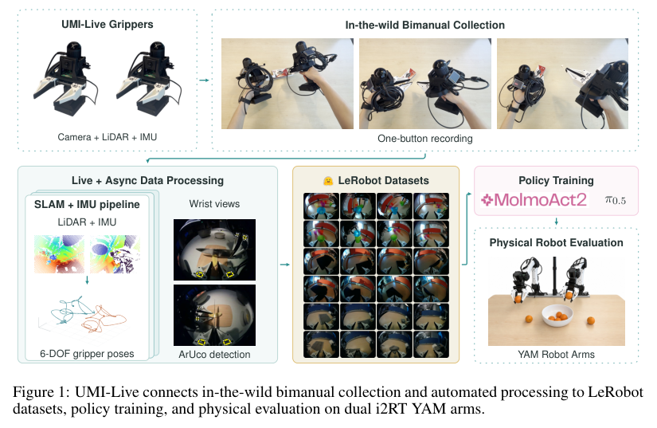
UMI-Live 将传统需离线手工配准与基站标定的手持 UMI 数采器改造成“端侧 LiDAR-惯性 SLAM + 异步并行管线自动推流 Hugging Face”的交钥匙工具链（单只 1.42 kg、续航 1.5 小时、一对硬件 BOM 约 1,930 美元），其工程集成度显著降低开源门槛；但核查论文（arXiv:2610.39385）、GitHub 源码仓库与…
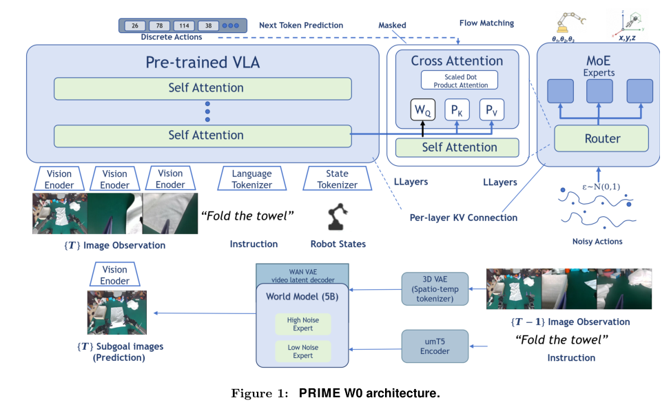
该期 8 条行业日报（2026-10-30，来源汇编号 SourceMind）经上游论文与官方产品页逐条穿透，产业主线体现为三股架构分化同步推进：数据标注细粒度化（Scale AI FineART 53.4 万条子任务、1,718 小时）、轻量评估器替代高价前沿模型（Nua Artificer 4B）与异构世界模型结合（PRIME W0 真机 78.1% vs 69.1%）；与此…
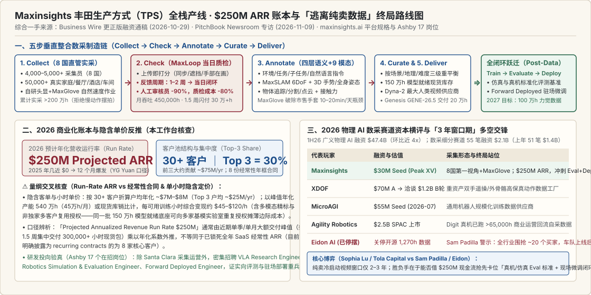
本篇将 Maxinsights（海宇数维）于 2026-10-29 发布的 Business Wire 官方更正版 $30M 种子轮暨 MaxLoop / MaxGlove 产品发布通稿、官网最新挂载的 2026-11-09 PitchBook Newsroom 深度专访（《Physical AI's data boom is a race to get out of the…
Physical Intelligence（π）在发布 $\pi_{0.7}$ 与多尺度具身记忆（MEM, arXiv:2603.03596, CoRL Spotlight）的基础上，于 2026 年 10 月正式推出托管开发者服务 Pi API Beta。这一进展包含两层关键技术与商业跃迁：① 架构层解决 VLA 的「金鱼记忆」瓶颈：传统 VLA 仅处理当前帧或几秒短窗口，若直…
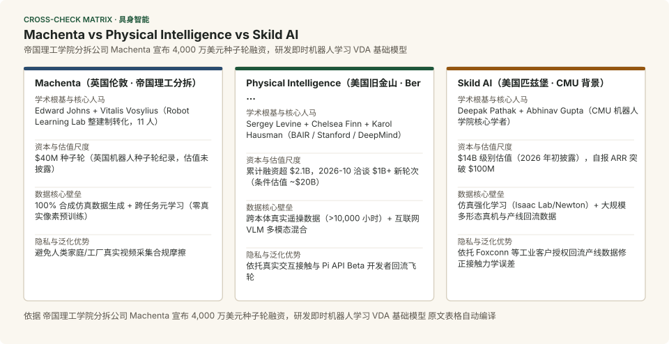
帝国理工学院于 2026-10-27 官方背书分拆公司 Machenta 完成 $40M（4,000 万美元）种子轮融资，刷新英国机器人初创公司种子轮融资纪录；公司以伦敦 King's Cross 为基地、11 人研发团队为核心，将帝国理工 Robot Learning Lab 六年研究转化为 Vision-Demo-Action（VDA）全仿真即时学习底座，但高校科研分拆到工业…
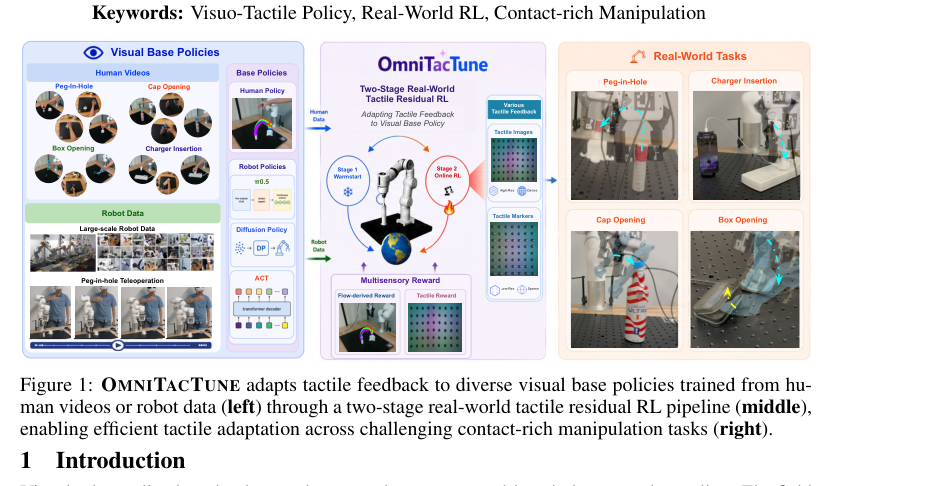
Kelin Yu（於柯霖）团队的底层判断高度成立——人类（27 自由度软体手+皮肤机械感受器）与机器人（平行夹爪+硅胶视触觉弹性体）的接触动力学差异决定了纯粹依靠人类视频或遥操作模仿学习只能解决“接触前空间走位（Pre-Contact）”，一旦切入毫米级插拔与动态撬动（Post-Contact），真机在线残差强化学习几乎不可绕过。OmniTacTune 的真正工程贡献不在发明新…
RoboStrategy（Nasdaq: BOT）创始人 Andrew Kang（2026-10-23 一手文章，SourceMind 编译）拆破「具身智能何时迎来 ChatGPT 时刻」的流行迷思：2022-11-30 发布的 ChatGPT 凭借共享云端 GPU 零边际成本与容忍幻觉的文案试错，5 天达 100 万用户、2 个月破 1 亿；而机器人横亘着「闲置税」（买断…
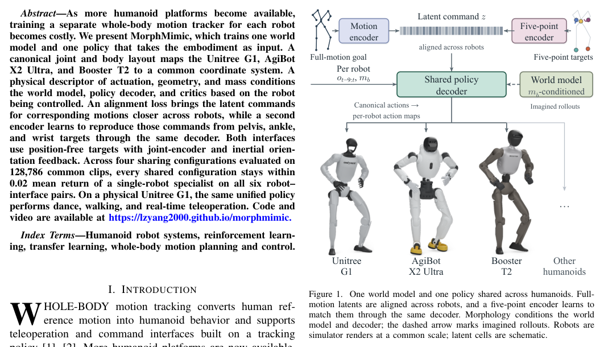
加州理工学院（Caltech：Lizhi Yang、Fengze Xie、Yuyang Wang、Yisong Yue、Aaron D. Ames）与佐治亚理工学院（Georgia Tech：Lu Gan）在 SuperMimic 公开两天后推出 MorphMimic（v0.1 2026-10-29），基于对 SuperMimic 的独立复现，首次让 宇树科技 (Unitree…
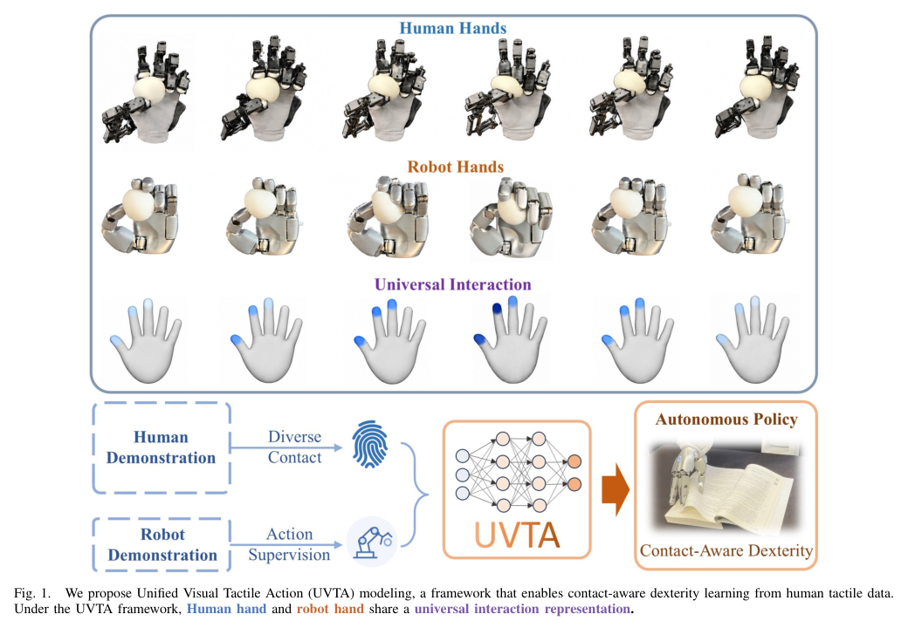
北京通用人工智能研究院（State Key Laboratory of General Artificial Intelligence / BIGAI，Siyuan Huang、Tengyu Liu）、上海交通大学（Shanghai Jiao Tong University，Wenqiao Li、Chuan Wen）、Beijing Institute of…
纯视觉/语言 VLA 在接触富集场景的结构性失效：a16z 原文指出，现代视觉、语言与世界模型已大幅提升机器人判断「应该做什么（what to do）」的能力，但「知道该做什么」并不等于物理世界能完成动作。在制造业、电子装配、物流与食品加工等非结构化场景中，零件移位、材料形变、打滑及连接器公差偏差是常态；一旦爪尖进入接触阶段（如抓取树莓或鸡蛋不捏碎、玻璃杯微滑瞬间加力、盲拧寻找螺…
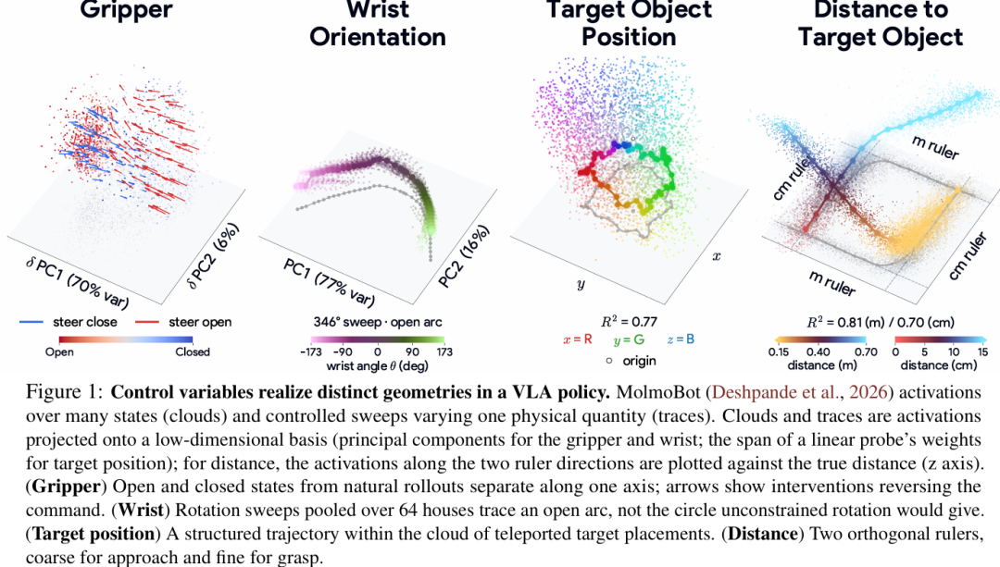
触发线索为微信公众号「human five」2026-10-16发布的编译长文《【慢科研】VLA如何在内部表示物理世界？》，直接对应Mozes Jacobs（哈佛/Goodfire AI）、Aiden Swann（斯坦福/Goodfire AI）、Mathilde Papillon（UCSB/Goodfire AI）、Thomas McGrath、Matthew…
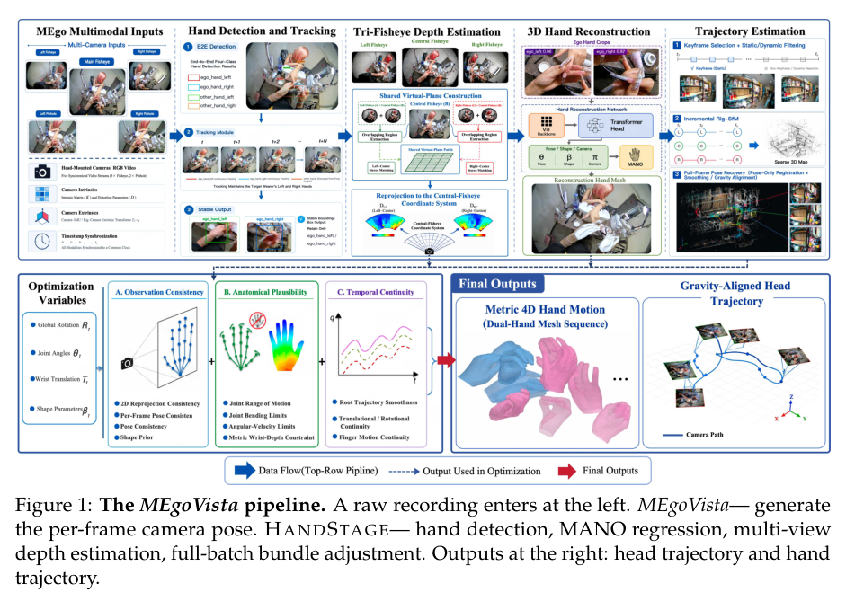
上海觅蜂科技（Maniformer）发表的 MEgoVista（arXiv:2609.16684v3，2026-10-22）直指当前第一视角数据重建中最常被美化指标掩盖的漏洞——单目深度先验（如 UniDepthV2）无法锁定真实物理米制尺度，而常见的 Procrustes 对齐误差（PA-MPJPE）在评分前人为消除了平移、旋转和手掌尺度。依托自研三目鱼眼头戴终端 MEgo…
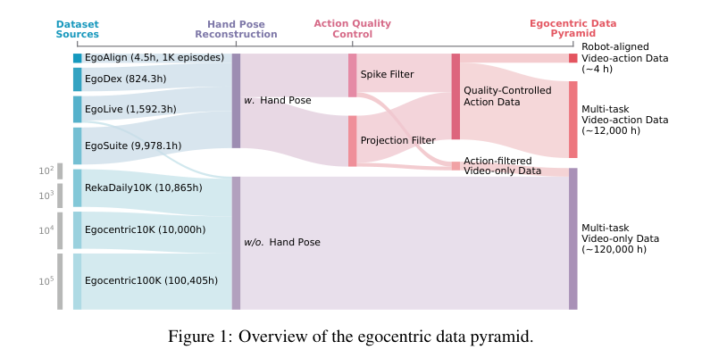
在 WAM（世界—动作模型）架构下，利用「1.5万小时人类视频预训练 + 1.2万小时多任务动作中训 + 少量任务对齐人类演示」，确实能将目标任务的真机遥操数据需求压缩 15 倍（Fold Cloth 仅需 20 条真机数据即恢复 80% ID / 80% 物体 OOD / 60% 场景 OOD 成功率），且仅靠 100 小时真机数据在 RoboDojo 取得 20.29 分 /…
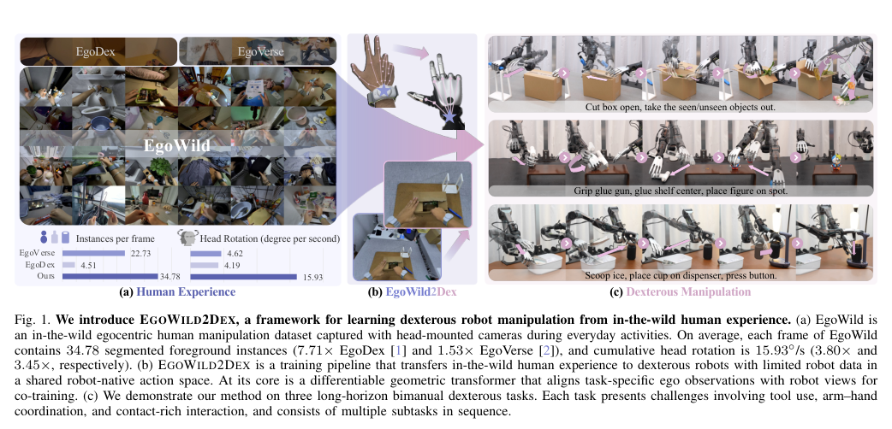
香港大学 MMLab 与 Kinetix AI（Kunyang Lin、Ping Luo 团队）发布的 EgoWild2Dex（arXiv:2609.23755）并非单纯堆砌第一视角人类视频规模，而是针对“无约束野外第一视角视频与真实机器人固定视角之间的巨大视觉-几何鸿沟”，提出了由 538.9 小时（179,049 个片段、5,820 万帧 @ 30 Hz）构成的高杂乱度开源语…
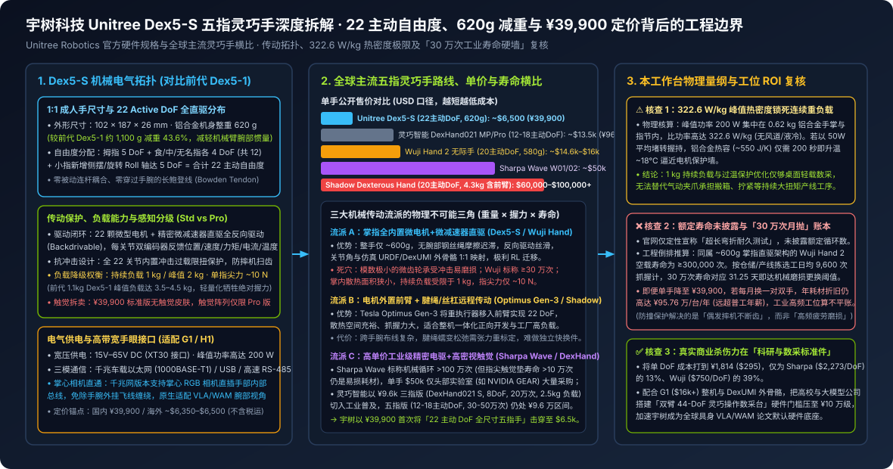
宇树科技 Dex5-S 以 ¥39,900（海外约 $6,500，单主动自由度成本仅 ¥1,814）首次将「1:1 成人手尺寸、620 g 自重、22 Active DoF 全直驱反向驱动五指灵巧手」拉入万美元以内，其工程减法是将前代 1.1 kg 的 Dex5-1P 大幅瘦身并剥离 94 点触觉阵列归入高配 Pro 版、同时将峰值握持负载从 3.5–4.5 kg 下调至持续…
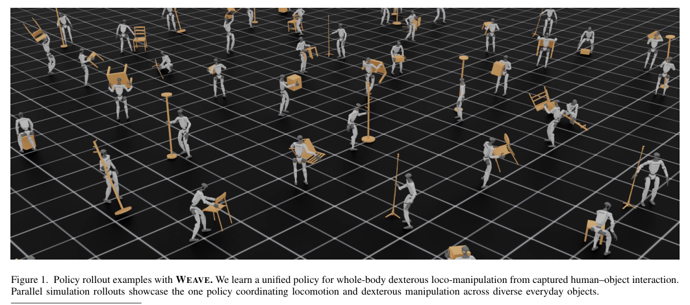
清华大学交叉信息研究院（IIIS）、清华学院人工智能班、大连理工大学与香港中文大学（Liu Cao、Xingze Wu、Jingzhi Cui、Botian Xu、Mingzhi Pei、Ruoqu Chen、Mengdi Xu 等，部分工作完成于 CocoMatrix）联合发布的 Weave（arXiv:2609.16683），打通了从人类-物体交互（HOI）动捕演示到人形机器…
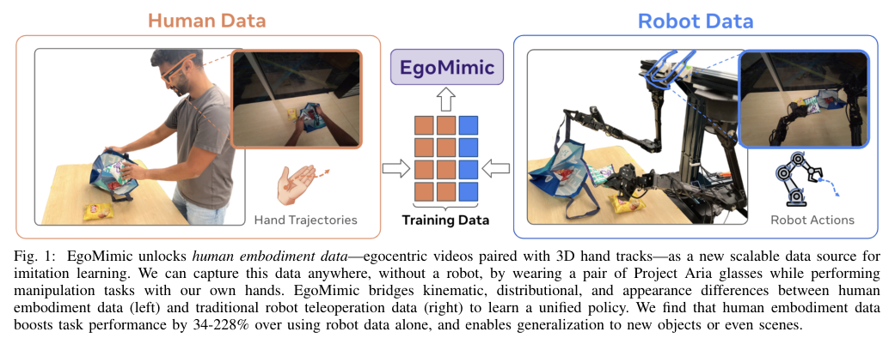
Unidata 依据其 4,050 小时第一视角商业数据集实采经验（2,321 小时仅头显方案 + 1,729 小时多摄像头方案，另含 1,000 小时 Robotic Household Activities Dataset），给出了 2026 年用消费级头显搭建工业化数采产线的完整工程解剖：之所以选定 Pico 4 Ultra（Snapdragon XR2 Gen 2、12…
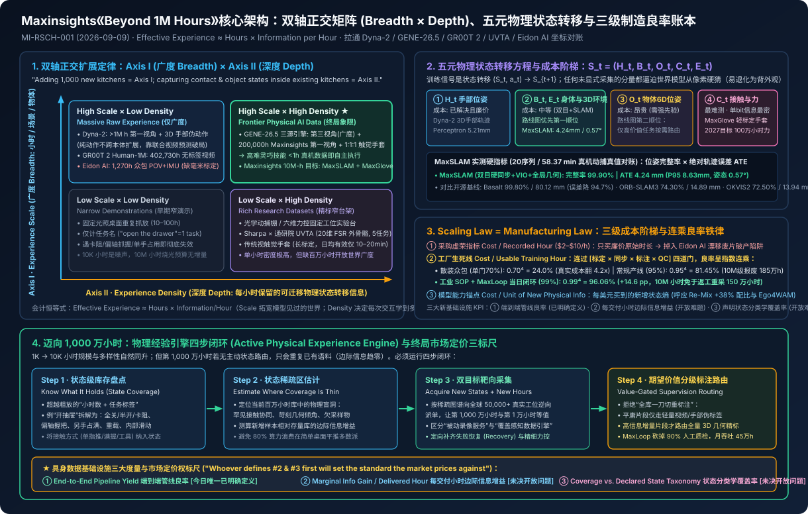
硅谷/中国具身数据基础设施商 Maxinsights（海宇数维）发布的官方工程研究《Beyond 1M Hours: The Data Scaling Laws of Physical AI》（文档编号 MI-RSCH-001，2026-09-09），不仅从官方一手披露层面实锤了用户给出的一线供应链情报——Maxinsights 同时充当 Dyna Robotics 百万小时世界…
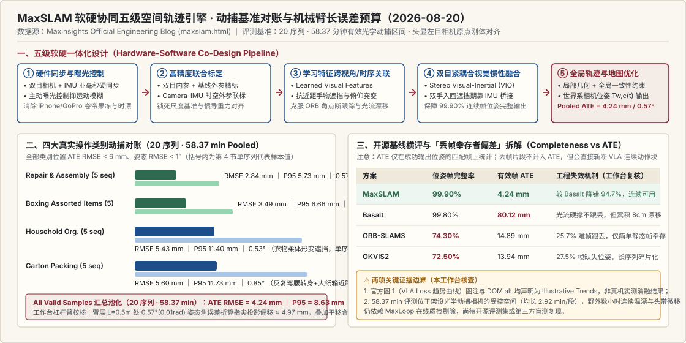
官方工程博客首篇算法与硬件协同白皮书，完整拆解其面向第一视角（Egocentric）人类灵巧操作采集的自研空间轨迹引擎 MaxSLAM。在覆盖近距遮挡、反复弯腰转身与精细桌面装配的 20 段真实操作序列（累计有效光学动捕区间 58.37 分钟，四大任务类别各 5 段） 内部基准评测中，MaxSLAM 在头戴式终端左目相机原点处相对光学动作捕捉（Motion-Capture）参考真…
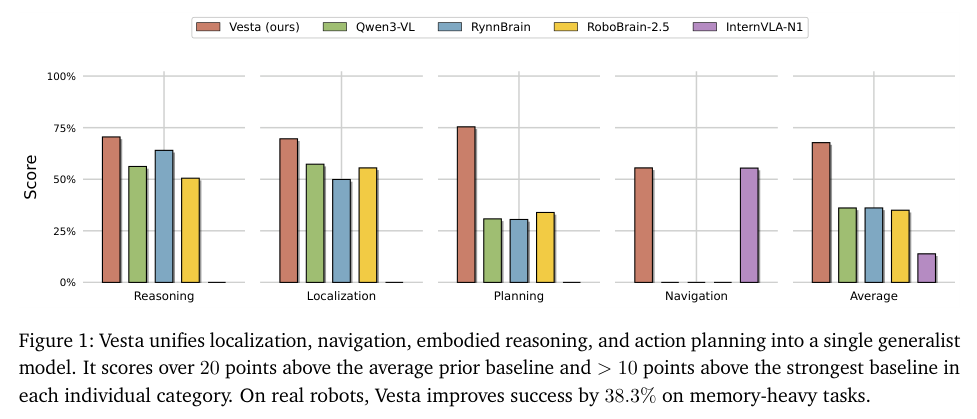
空间感知强偏置的六元 SFT 配方（图 4）：将超过 69% 的配比倾注于物理空间底座——Spatial Intelligence 占 27.1%、Navigation 占 21.8%、Grounding（指代与接触点预测）占 20.8%，再以 16.2% General VLM 数据保底通用语义能力防止过拟合，最后用 9.8% Embodied Reasoning 与 4.3%…
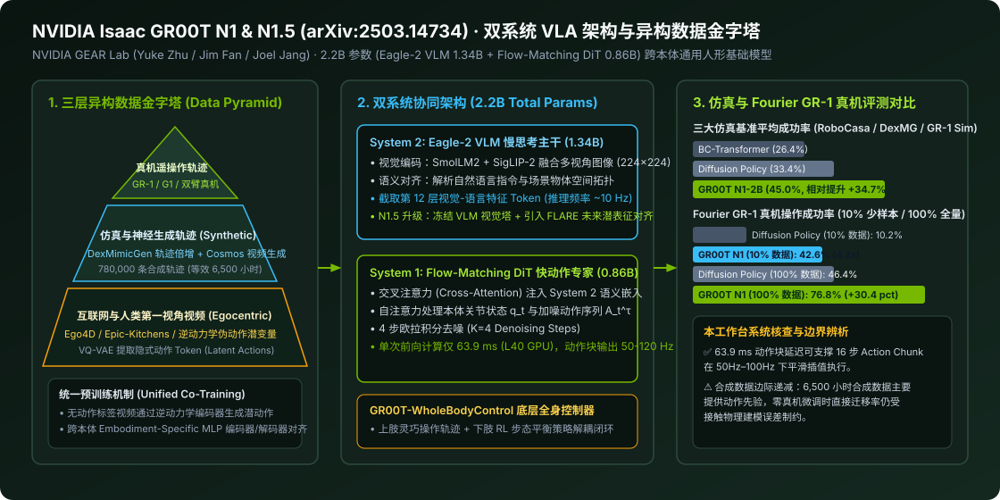
NVIDIA GEAR Lab 发布通用人形机器人开源基础模型 GR00T N1 与 N1.5 技术报告（ 与全身控制框架 。架构采用 Eagle VLM (System 2) + Diffusion Transformer (System 1) 双系统设计，融合真机… · arXiv:2503.14734 · GR00T N1 & N1.5 · 已整理 场景与利益标注：本文系…
前 Google Cloud Web3 创始团队成员 Sam Padilla（@theSamPadilla）与前 DeepMind 研究员 Peter Toth 联合创立的去中心化具身数采公司 Eidon AI（曾获 Framework Ventures 领投、cyber·Fund 参投 $3.5M 种子轮），于 2026-09-22 在官号 @eidon_ai 正式宣布在运营两…
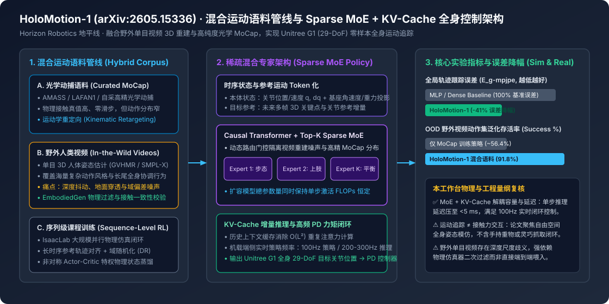
Horizon Robotics 发布人形机器人全身运动追踪基础模型 HoloMotion-1 技术报告（ 及生成式 3D 物理世界引擎 。采用稀疏混合专家（Sparse MoE Transformer）骨干网络，结合海量野外人类视频三维重建轨迹与… · arXiv:2605.15336 · HoloMotion-1 Technical Report · 已整理 场景与利益标注…
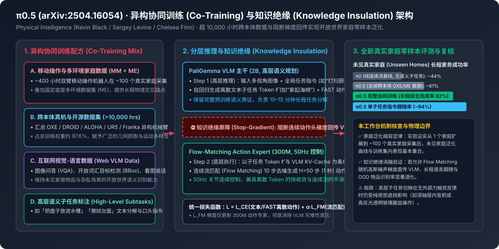
Physical Intelligence 发布 π0.5 (pi0.5) 开放世界泛化视觉-语言-动作 (VLA) 基础模型论文（ 。模型基于超 10,000 小时跨本体真机灵巧操作数据、互联网多模态数据与高层语义子任务预测进行异构协同训练（Co-training），引入知识绝缘（Knowledge Insulation）机制阻断离散 … · arXiv:2504.16054…
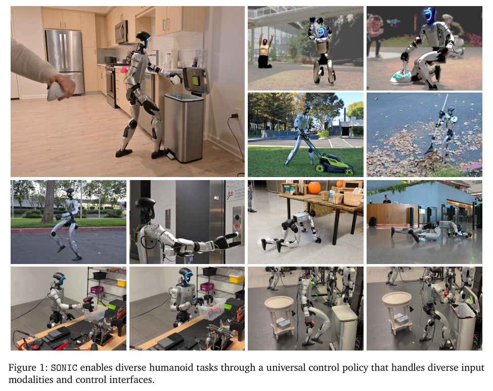
工作台已在 Zhengyi Luo (罗正宜) 2025–2026 研究人物档案 收录了 罗正宜 的多论文完整谱系；本篇 2026 年 4 月 16 日一手专访（围绕 NVIDIA GEAR Lab 发表在 Science Robotics 的 SONIC：arXiv:2511.07820）的核心增量在于揭开了三个论文正文未明言的工程决策：700 小时核心动捕底座直接复用了英伟达…
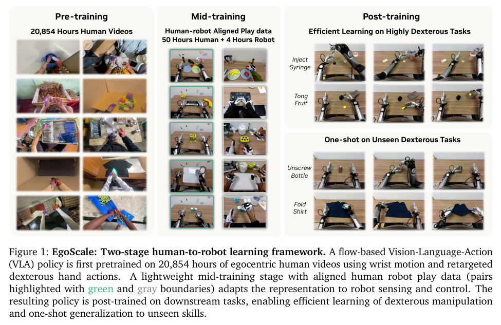
佐治亚理工学院助理教授、NVIDIA Research 研究员 Danfei Xu 围绕 EgoScale（arXiv:2602.16710）提出的命题直指物理世界模型底层：当前机器人遥操作本质上只是一种“被低通滤波阉割过的人类数据”（丢失了毫秒级 System 1 力触微操反射与社交协同），因此真正能承接互联网时代预训练红利的是第一视角日常人类数据。在 20,854 小时人类手…
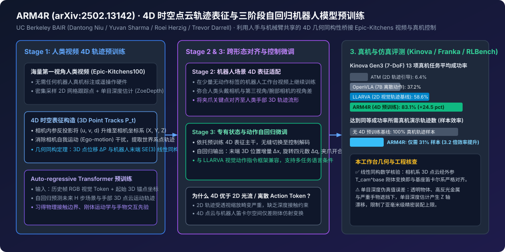
UC Berkeley BAIR 实验室 Trevor Darrell 团队发表 ARM4R 论文 。针对机器人真机标注数据稀缺瓶颈，提出利用单目深度估计从海量人类第一视角（egocentric）视频中提取底层 4D 时空点云轨迹表征（3D point tracks across time），利用人类手部与机械臂末端共享的 4D 几何同构性预训练自回… · arXiv:2502.…
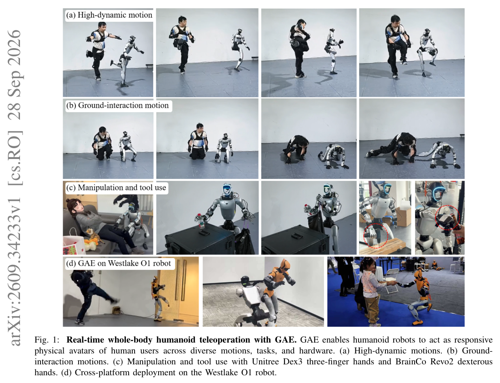
西湖大学 MiLAB 王东林与一作 Yuefan Wang（王悦凡）团队提出的 GAE（General Action Expert，arXiv:2609.34233）揭示了一个正在收紧的工程分化：在超 10,000 小时混杂 MoCap 与视频的百万级轨迹规模上，模型架构（是否引入 MOE）只贡献约 1%–2% 的性能差异，真正带来 10%–20% 跃升的是数据多样性配比、几何对…
清华叉院（IIIS）高阳团队提出的 HuB（Humanoid Balance，CoRL 2025 Oral）在传统全身动作追踪几乎全部归零的极难静态平衡动作上把 Unitree G1 真机成功率拉到了 80%–100%，但它的本质是针对单一动作重度特化的静态平衡稳控器，而非通用多技能框架。该工作既证明了互联网视频提取的 SMPL 数据经过运动学重整后可用于极端力学极限测试，也暴露…
UC Berkeley BAIR 提出的 VideoMimic 证明了日常 2D 单目 RGB 视频可以通过几何联合重建驱动人形机器人的环境感知全身运控（Visual Imitation / Contextual Humanoid Control），但它并未绕开动作捕捉数据——消融实验显示去掉阶段一基于少量 LaFAN MoCap 的预训练（MPT）后，策略成功率会从约 0.7–…
放在 2024→2026 具身智能 S2→S1 演化谱系中，RT-H（Action Hierarchies Using Language）的历史坐标是 在扁平自回归 VLA（RT-2）撞上跨任务泛化与遥操作纠偏瓶颈后，首次验证「中间动作抽象层 + 廉价本体自动标注 + 在线语言纠偏」能够把不同高层语义任务（如“抓可乐罐”与“倒杯子”）压进共享低层运动空间——它在 8 项高难度真机…
由 UC Berkeley（BAIR）与 Google DeepMind 联合发表的《Robotic Offline RL from Internet Videos via Value-Function Pre-Training》（arXiv:2309.13041v1，作者 Chethan Bhateja、Derek Guo、Dibya Ghosh、Anikait…